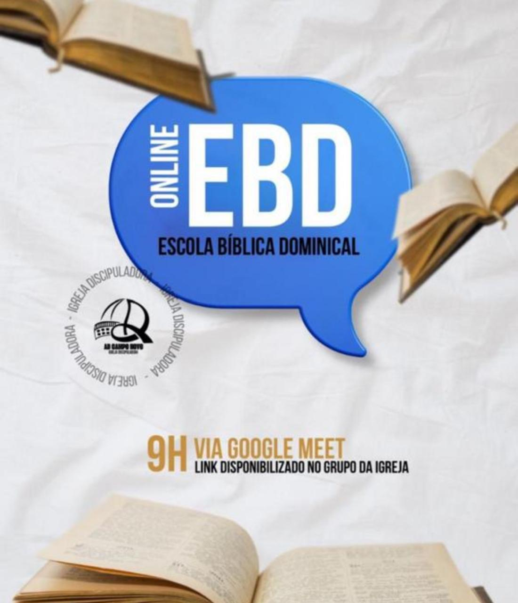

Programações da Igreja
Campo Novo – Sede
📍 Av. Bento Gonçalves, 782 – Centro
Domingo 9h
EBD Online
EBD Online
Domingo 19h
Celebração
Celebração
 Segunda 21h
Segunda 21hSala de Crescimento
 Terça 19h30
Terça 19h30Terça Profética
 Quarta 14h30
Quarta 14h30Celebração da Tarde
Sexta 6h30
Jejum e Oração
Jejum e Oração
 Sábado 19h30
Sábado 19h30Sala de Adoração
Braga – RS
📍 Av. Campos Sáles, 150 – Bairro Evangélico
Domingo – 19h
Celebração
Celebração
Quarta – 19h30
Culto de Ensino
Culto de Ensino
Sábado – 19h30
Sala de Adoração
Sala de Adoração
São Martinho – RS
Domingo – 19h
Celebração
Celebração
Quinta – 19h30
Celebração
Celebração
Sábado – 19h30
Sala de Adoração
Sala de Adoração